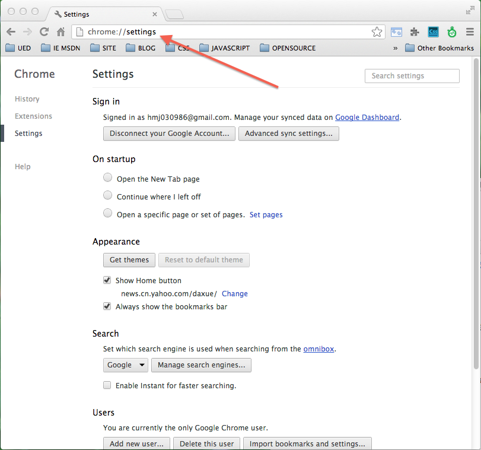
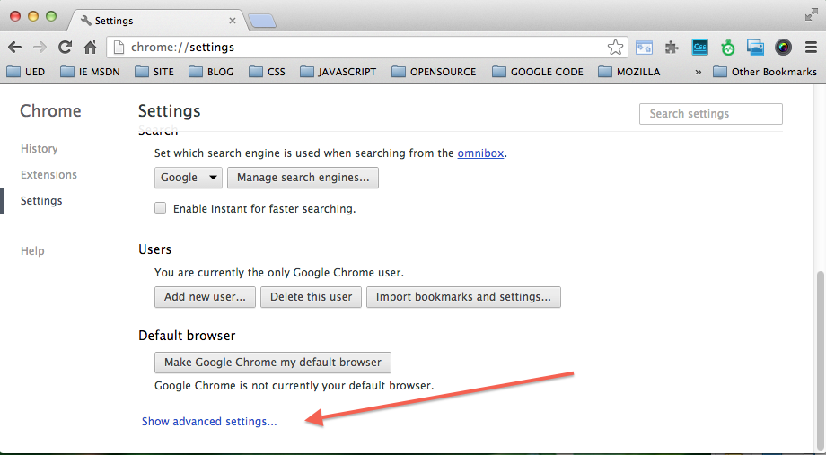
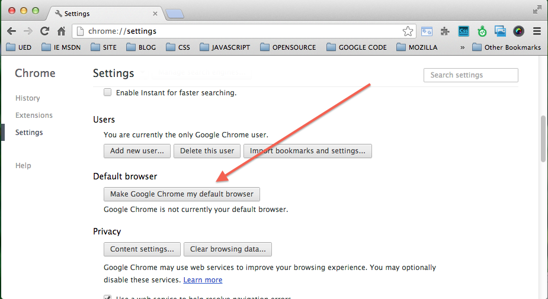
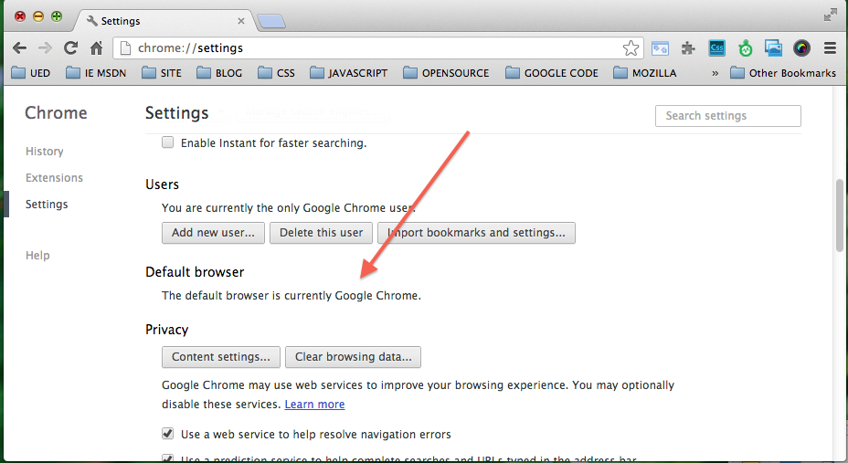
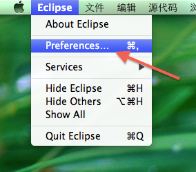
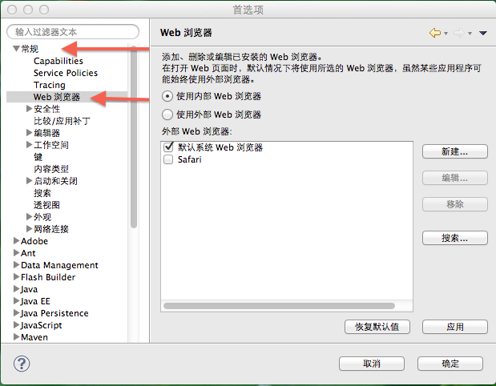
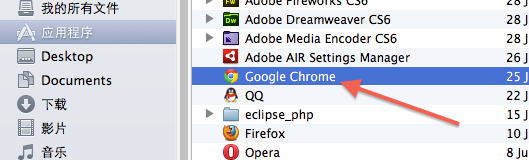
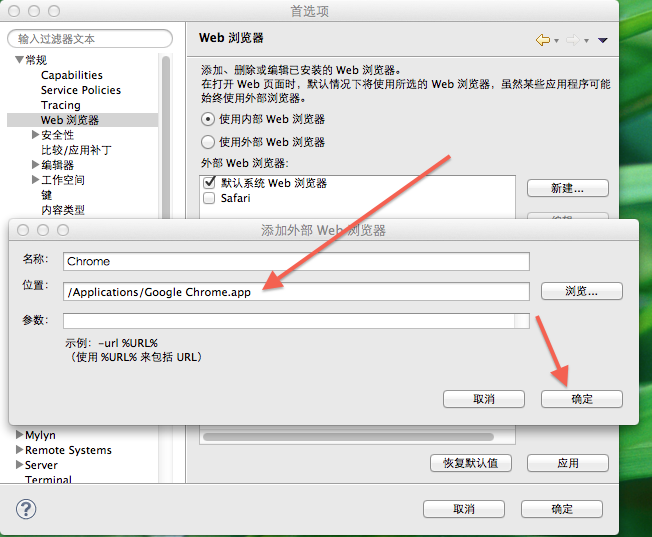
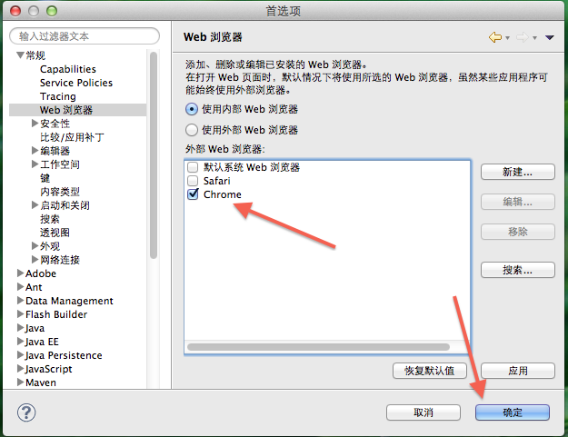

Flash Builder 设置默认启动的浏览器
Flash Builder提供两种安装方式：
我选择第二种安装方式，主要是为了使用Eclipse提供的其它相关的功能，如服务器配置，多类型编辑器选择等等。
在运行和调试Flex程序时，默认打开的是当前系统的默认浏览器。由于个人喜好，我将系统默认的浏览器设置为Chrome,设置方式如下
打开Chrome，在地址栏中输入chrome://settings/命令

打开"高级选项设置(Show advanced settings…)

找到并点击"设置Chrome为默认浏览器"的按钮"


但在正式运行Flex工程时结果打开的浏览器为苹果的Safari。所以找到如下设置Flex工程打开的浏览器类型的方法:
选中Eclipse，在顶部菜单栏中点击“偏好设置(Preferences)”菜单项，打开Eclipse的偏好设置面板

选择“常规”—>"Web浏览器"

在"Web浏览器"面板中，点击“新建”按钮。在弹出的面板中，依次输入新加入的浏览器的“名称”，并添加其“位置“。可选性的添加“参数”。之后点击“确定”，完成新增浏览器的设置。



返回“Web浏览器”面板，勾选Chrome浏览器。点击“确定”完成整个设置过程。

重新启动工程，现在工程成功在Chrome中运行起来。